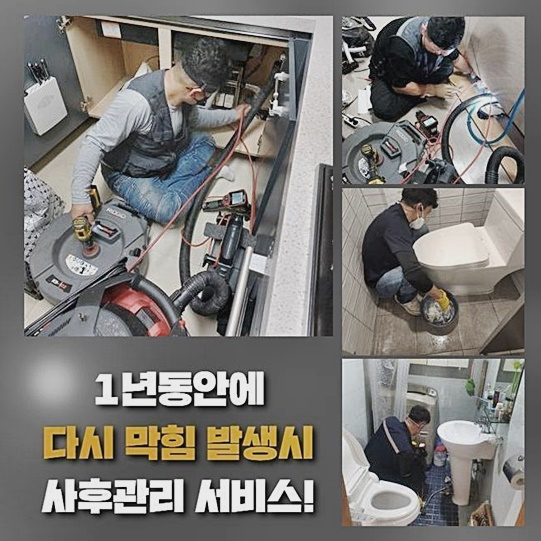
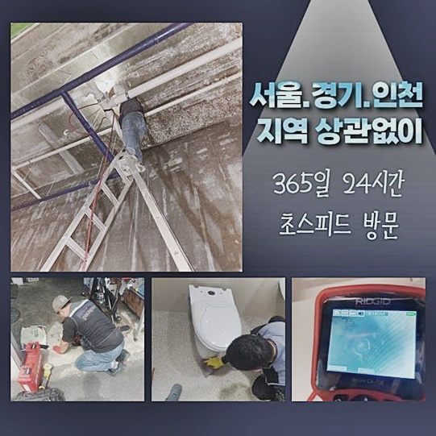
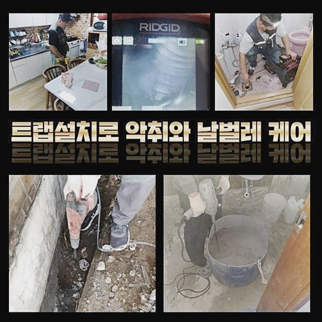
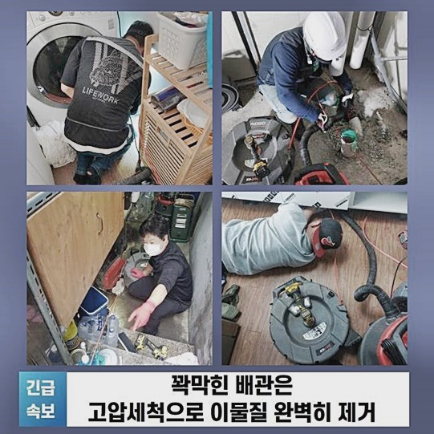
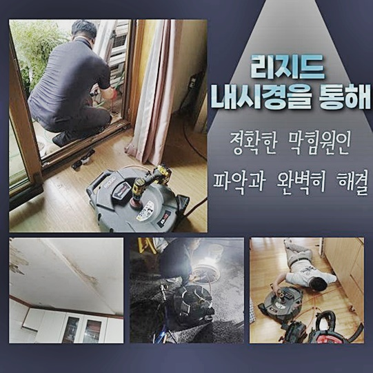
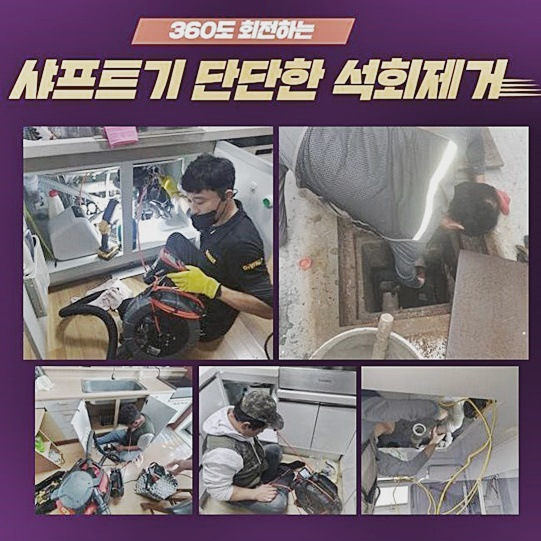
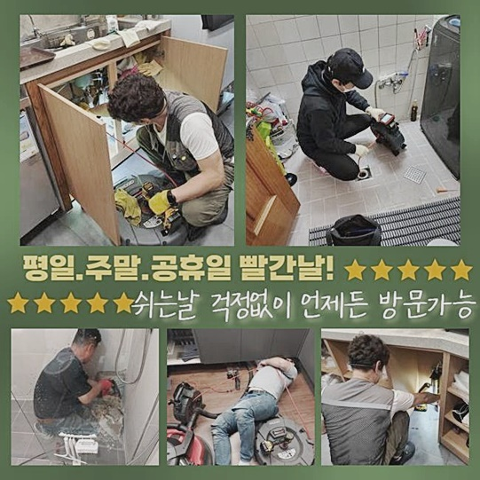

🏠 동두천 지행동 하수도뚫음 상패동 하수구뚫는곳 출장설비
동두천 싱크대막힘 전문 시공 후기

📋 작업 개요
- 위치: 동두천
- 서비스 유형: 싱크대막힘, 하수구막힘, 배관막힘, 집수정막힘, 역류해결, 뚫는업체, 배관청소, 고압세척
- 작업 일시: 2024. 6. 22. 16:17
- 업체명: 하수구수사대 (010-5615-2118)
🔍 문제 상황
동두천 지행동 하수도뚫음 상패동 하수구뚫는곳 출장설비
배수관에 문제들이 생겨날 시 허둥지둥 하게됩니다
금일엔 막히는 증상에 대해서 설명드릴테니 꼼꼼히 보신다라면 도움들이 있다고 생각해요!
여러분들이 이용하시는 수도는 개별적으로 배출되기보다 중앙의 메인배수관으로 모일 목적으로 연결되어있으며 집수설비로 빠지죠
그렇기에 드러나지 않을지라도 하수도는 지면밑에 부분에 복잡하게 설계되어있으므로 막히는 증세가 생겼다면 여타 부위에서 잔해물이 쌓이게되서 피해들이 발생될테죠
심할땐 어느부분에서 물들을 틀면 뜻밖의 구간서 역류할수도 있고 집수정으로 전체적으로 빠지지못하는 경우들이 생겨나서 이땐 전문업체들과 서둘러 해결해야합니다
앞으로 주방에 막히는 증세가 발생된 모습들로서 주방에서 물을 쓰면 세탁기가 있는 다용도 시설에도 문제들이 생겨 저희업체께 성급하게 달려왔으면한다고 전화하셨죠
도착하여 관찰하니 싱크대 하수배관들은 세탁실의 관로들과 연결자체가 되었던 모습으로 다용도실의 피해들로 발전된거라 생각했어요

🔎 원인 분석
💡 전문가 진단: 정밀 진단 장비를 사용하여 슬러지의 고착 여부를 판명하고 타격/세척 작업을 실시했습니다.
단지 배수관으로 빠지질 못해 고민이되셨을거라 생각하는데 오래될수록 슬러지가 점차 심층부로 내려가 쌓이므로 연결된 배수관이 막히는 사태가 있답니다
테스트해보려고 싱크볼에서 수돗물을 틀어보았더니 기름기와 하수가 다용도실로 역류하는걸 알 수 있었고 다용도실 문제의 기조가 주방과 관련들이 있음을 인지했죠
의뢰인은 주방과 세탁기 모집수정으로에서 냄새들이 발생하여 생활양식 선에도 피해들을 받게되면서 중간에 클리너들을 써가면서 큰 피해들을 없애주었다고 하셨어요
간단히 들여다봤을때도 배수로에 오물이 축적되어있는데 씽크대를 사용해주며 꾸준히 솟구치는 바람에 배수관으로 빠져야하는 이물질이 그대로 역류해버린 상황이었습니다
해당 구조적 부분은 다가구세대에서 흔하게 보이는데 오늘과같이 동시다발적으로 예상못한 피해가 발생한다면 끝도없이 부분에서 불편들을 양산시키게되요
고객님에게 문제의 상황을 이해하기 쉽게 말씀드리고 빠르게 바로 잡을 수 있게 장비를 준비하여 본격적으로 배관시공에 들어갔죠
일단 석션장비로 고여있던 하수들을 흡입해 청소하는 수순을 밟고 석션통으로 신속히 제거되는 소리도 났습니다
하수관 입구의 주변부를 막고 압박해주니 배수관의 심층부에 있던 잔해물을 세척했는데요

🔧 작업 과정
해당 사례처럼 막히게된 배수로에서 석션장치로 물길을 마련한다면 내시경장치를 통해서 내측 상태를 꼼꼼하게 관찰하죠
어느 구간에 막히게되었으며 하수관에 오염물이 퇴적되며 혹여나 상처가 있는지 종합적으로 체크해야해요
내시경기기를 사용하니 개수대서 연장된 관로와 세탁기배수구 부분까지 잔해가 많아 상태가 좋지 못했고 찐득하게 여타 이물질과 몸집을 키워나가고 단단해져 고착되어버린 이물질도 많았으며 막히는 연유를 정확히 관찰했어요
완성도 있는 결과 보장을 실시하기 전 샤프트장비를 마련하고 샤프트장비의 라인을 넣어 머리부분에 부착된 노커로 고착물을 분쇄했어요
오늘 방문드린 데는 양쪽 배관이 이어진 모습이였기에 이물제거를 하고서는 석션을 통해 떠다니는 이물잉여도 문제될 수 없게 심부까지 작업했죠
해당 과정에서는 각 배관에서 기기를 이용하여 고착물 제거까지 시킨 까닭에 신속히 막히는 증상을 잠재웠고 벽도 깔끔해졌고 긴 시간동안에는 재발과 관련한 걱정들은 안하셔도 되요
저희들이 쓰는 샤프트의 경우 선이 가늘고 휘어짐도 좋아서 심층부라던지 꺾여진 부분도 원활하게 투입되는 까닭에 찾아뵈었을 시 반드시 마련해야하는 기기랍니다
내부가 복잡스런 구간이라도 케이블들을 투입가능한 여유가 있으면 장소 상관없이 이용되기에 청소해줄 때 점검불가 상태가 펼쳐질까라는 염려들을 말끔히 해결해드려요
샤프트에 전기드라이버를 더해 청소가되기에 서둘러 돌아가는 체인들이 딱딱한 이물까지 느끼지않게 제거해주므로 방문드린 시점에 고민들을 없애드려요
최종적으로 세척을 끝내고 제거된 오염원을 관찰했는데 지금껏 배관 쌓인 이물질로 하수오류와 악취로 스트레스가 많으셨겠다 생각이 되었죠
지금의 집으로 옮긴게 오래된게 아니라고 하셨는데 하수관은 축조될때부터 사용되기에 앞서서 깨끗하게 관리했는지 모르기에 언제쯤 문제를 일으킬지는 누구라도 미리 알기는 힘들어요
그러나 하수도에 피해들이 발생되기에 앞서 보여지는 이런저런 기미를 살피면서 관리하셔서 문제들에 피해를 입지않도록 하는게 크다고 생각해요
작업이 잘되었는지 보려고 싱크볼로 물을 채워넣어 온전히 빠지는지 경과를 지켜보고 정리를 했는데요


✅ 작업 완료
물이 안빠지는건 다양한 원인들로 막히게되는 것으로서 이런 피해들이 생긴다면 전문가와 안정적으로 해결을 꾀해보세요
증상들이 야기되었을때 고객분이 알려주신 데로 방문드리는 저희들을 잊지말아주시고 혹여 문제들이 생겼을 때 찾아주실때 완벽히 시공해드리겠습니다
지역을 따지지않고 한시간 전후로 도달이 이뤄지고 있고 믿을 수 있는 시공으로 실패없는 뚫음을 안겨드릴테니 전화주십쇼!
혹시나 궁금증이 있을 경우 부담없이 물어보세요!




⚠️ 주방 싱크대 배관 막힘 예방 수칙
- ✅ 기름기가 묻은 식기나 프라이팬은 설거지 전 키친타올로 반드시 기름때를 닦아내세요.
- ✅ 주기적으로 싱크대 개수대에 뜨거운 물을 가득 받아 한 번에 내려 배관 내부 기름을 씻어내세요.
- ✅ 배수구 거름망을 미세한 필터로 사용하시고 음식물 찌꺼기가 틈으로 새어 들지 않게 관리하세요.
- ✅ 베이킹소다와 식초를 뜨거운 물과 함께 일주일에 한 번씩 부어주면 배관 살균과 막힘 예방에 좋습니다.
💡 핵심 정리
- 확실한 장비 작업(내시경 점검 및 샤프트 스케일링)으로 원인을 뿌리 뽑습니다.
- 작업 후 1년 이내에 동일한 부위 재발 시 100% 무상 A/S 서비스를 보장합니다.
- 서울 · 경기 · 인천 전 지역에 24시간 언제든 긴급 출동할 수 있도록 항시 대기 중입니다.
❓ 자주 묻는 질문 (FAQ)
🚨 동두천 싱크대막힘 문제로 고민이신가요?
정확한 원인 진단과 확실한 시공으로 재발 없는 해결을 약속드립니다.
24시간 긴급 출동 | 서울 · 경기 · 인천 전지역 | 1년 내 재발 시 무상 A/S